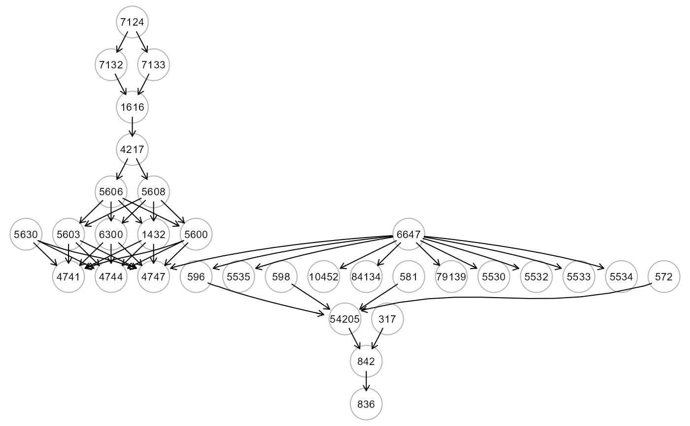
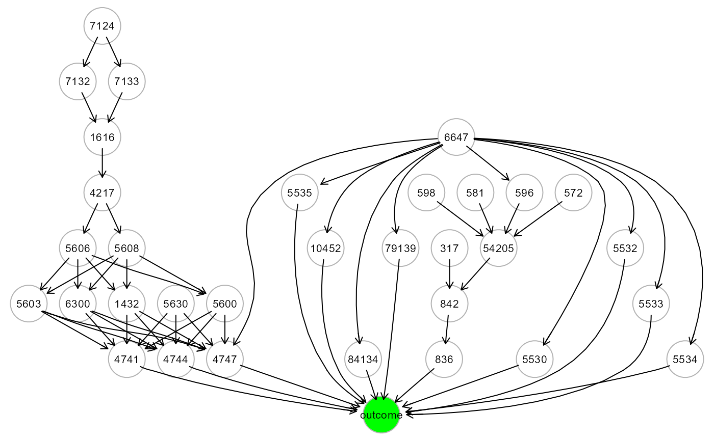
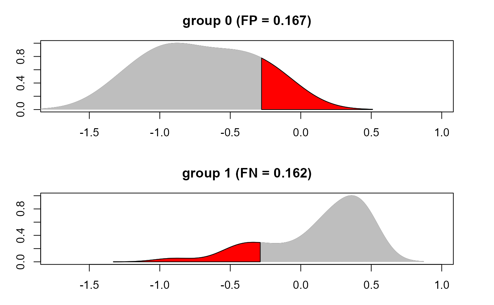

This function is able to calculate a series of binary classification evaluation statistics given (i) two vectors: one with the true target variable values, and the other with the predicted target variable values or (ii) a confusion matrix with the counts for False Positives (FP), True Positives (TP), True Negatives (TN), and False Negatives (FN). The user can specify the desired set of metrics to compute: (i) precision, recall, f1 score and Matthews Correlation Coefficient (mcc) or (ii) specificity, sensitivity, accuracy and mcc.
benchmark(yobs, yhat, CT = NULL, thr = 0, F1 = TRUE, verbose = FALSE, ...)A binary vector with the true target variable values.
A continuous vector with the predicted target variable values.
An optional confusion matrix of dimension 2x2 containing the counts for FP, TP, TN, and FN.
A numerical value indicating the threshold for converting the
yhat continuous vector to a binary vector. If yhat vector
ranges between -1 and 1, the user can specify thr = 0 (default);
if yhat ranges between 0 and 1, the user can specify thr = 0.5.
A logical value. If TRUE (default), precision (pre), recall (rec), f1 and mcc will be computed. Otherwise, if FALSE, specificity (sp), sensitivity (se), accuracy (acc) and mcc will be obtained.
A logical value. If FALSE (default), the density plots of
yhat per group will not be plotted to screen.
Currently ignored.
A data.frame with classification evaluation statistics is returned.
#' Suppose a 2x2 table with notation
| Reference | ||
| Predicted | Event | No Event |
| Event | A | B |
| No Event | C | D |
The formulas used here are: $$se = A/(A+C)$$ $$sp = D/(B+D)$$ $$acc = (A+D)/(A+B+C+D)$$ $$pre = A/(A+B)$$ $$rec = A/(A+C)$$ $$F1 = (2*pre*rec)/(pre+rec)$$ $$mcc = (A*D - B*C)/sqrt((A+B)*(A+C)*(D+B)*(D+C))$$
Sammut, C. & Webb, G. I. (eds.) (2017). Encyclopedia of Machine Learning and Data Mining. New York: Springer. ISBN: 978-1-4899-7685-7
Chicco, D., Jurman, G. (2020) The advantages of the Matthews correlation coefficient (MCC) over F1 score and accuracy in binary classification evaluation. BMC Genomics 21, 6.
# \donttest{
# Load Amyotrophic Lateral Sclerosis (ALS)
data<- alsData$exprs; dim(data)
#> [1] 160 318
data<- transformData(data)$data
#> Conducting the nonparanormal transformation via shrunkun ECDF...done.
group<- alsData$group; table (group)
#> group
#> 0 1
#> 21 139
ig<- alsData$graph; gplot(ig)

#...with train-test (0.5-0.5) samples
set.seed(123)
train<- sample(1:nrow(data), 0.5*nrow(data))
#...with a binary outcome (1=case, 0=control)
ig1<- mapGraph(ig, type = "outcome"); gplot(ig1)

outcome<- group; table(outcome)
#> outcome
#> 0 1
#> 21 139
data1<- cbind(outcome, data); data1[1:5,1:5]
#> outcome 207 208 10000 284
#> ALS2 1 -1.8273895 -0.45307006 -0.1360061 0.4530701
#> ALS3 1 -2.5616910 -0.96201413 0.3160400 0.6762093
#> ALS4 1 -0.8003346 0.82216031 -1.1521227 0.5613048
#> ALS5 1 -2.1342965 -0.98709115 1.1521227 0.5064807
#> ALS6 1 -2.0111279 0.02393297 0.5987578 0.1360061
res <- SEMml(ig1, data1, train, algo="rf")
#> 1 : z10452
#> 2 : z1432
#> 3 : z1616
#> 4 : z4217
#> 5 : z4741
#> 6 : z4744
#> 7 : z4747
#> 8 : z54205
#> 9 : z5530
#> 10 : z5532
#> 11 : z5533
#> 12 : z5534
#> 13 : z5535
#> 14 : z5600
#> 15 : z5603
#> 16 : z5606
#> 17 : z5608
#> 18 : z596
#> 19 : z6300
#> 20 : z79139
#> 21 : z836
#> 22 : z84134
#> 23 : z842
#> 24 : zoutcome
#>
#> RF solver ended normally after 24 iterations
#>
#> logL: -34.36475 srmr: 0.0854561
#>
mse <- predict(res, data1[-train, ])
yobs<- group[-train]
yhat<- mse$Yhat[ ,"outcome"]
#yprob<- exp(yhat)/(1+exp(yhat))
#benchmark(yobs, yprob, thr=0.5)
# ... evaluate predictive benchmark (sp, se, acc, mcc)
benchmark(yobs, yhat, thr=0, F1=FALSE)
#> ypred
#> yobs 0 1
#> 0 5 1
#> 1 13 61
#>
#> sp se acc mcc
#> 1 0.8333333 0.8243243 0.825 0.4148196
# ... evaluate predictive benchmark (pre, rec, f1, mcc)
benchmark(yobs, yhat, thr=0, F1=TRUE)
#> ypred
#> yobs 0 1
#> 0 5 1
#> 1 13 61
#>
#> pre rec f1 mcc
#> 1 0.983871 0.8243243 0.8970588 0.4148196
#... with confusion matrix table as input
ypred<- ifelse(yhat < 0, 0, 1)
benchmark(CT=table(yobs, ypred), F1=TRUE)
#> ypred
#> yobs 0 1
#> 0 6 0
#> 1 19 55
#>
#> pre rec f1 mcc
#> 1 1 0.7432432 0.8527132 0.4223486
#...with density plots of yhat per group
old.par <- par(no.readonly = TRUE)
benchmark(yobs, yhat, thr=0, F1=FALSE, verbose = TRUE)
#> ypred
#> yobs 0 1
#> 0 5 1
#> 1 13 61
#>

#> sp se acc mcc
#> 1 0.8333333 0.8243243 0.825 0.4148196
par(old.par)
# }